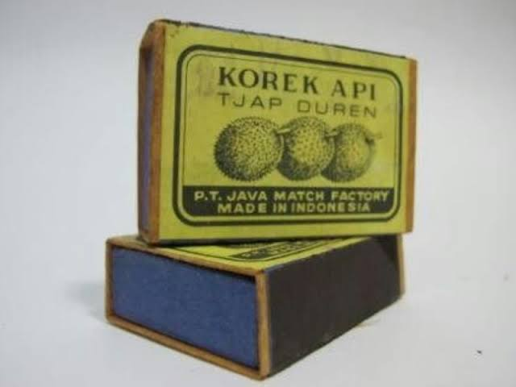
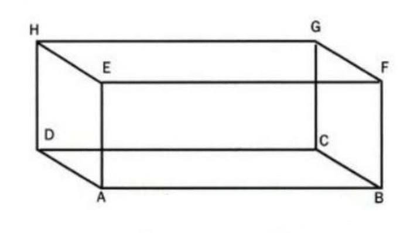
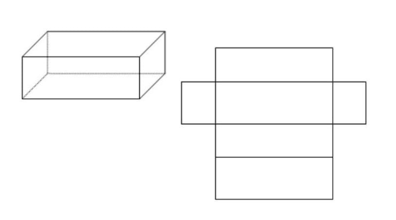
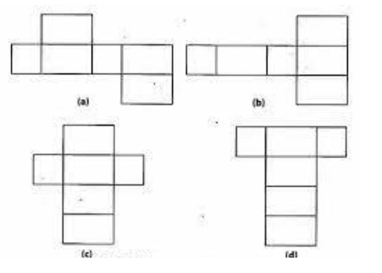
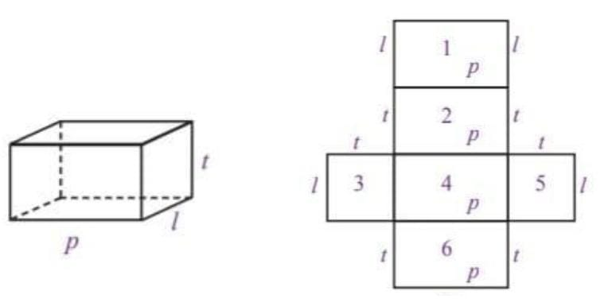
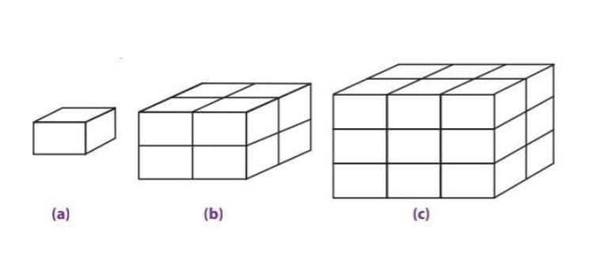

Bangun ruang sisi datar merupakan suatu bangun tiga dimensi yang memiliki ruang/ volume/ isi dan juga sisi-sisi yang membatasinya. Secara garis besar, bangun ruang bisa kita kategorikan menjadi dua kelompok, antara lain: bangun ruang sisi datar dan bangun ruang sisi lengkung. Yang termasuk dalam bangun ruang sisi datar yaitu kubus, balok, prisma, dan limas. Sementara untuk bangun ruang sisi lengkung terdiri atas kerucut, tabung, dan bola. Bangun ruang sisi datar merupakan suatu bangun ruang di mana pada masing-masing sisinya tersusun dari bangun datar. Apabila dalam suatu bangun ruang mempunyai satu saja sisi yang lengkung maka bangun tersebut tidak bisa dikatakan sebagai bangun ruang sisi datar.
Banyak sekali benda-benda di sekitarmu yang memiliki bentuk seperti balok. Misalnya, kotak korek api, dus air mineral, dus mie instan, batu bata, dan lain-lain. Mengapa benda-benda tersebut dikatakan berbentuk balok? Untuk menjawabnya, cobalah perhatikan dan pelajari uraian berikut.
 1. Pengertian Balok
Perhatikan gambar kotak korek api pada Gambar 31. Jika kotak korek api tersebut digambarkan secara geometris, hasilnya akan tampak seperti pada Gambar 32 . Bangun ruang ABCD.EFGH pada gambar tersebut memiliki tiga pasang sisi berhadapan yang sama bentuk dan ukurannya, di mana setiap sisinya berbentuk persegipanjang. Bangun ruang seperti ini disebut balok. Berikut ini adalah unsur-unsur yang dimiliki oleh balok ABCD.EFGH pada Gambar 32 .
2. Sifat-sifat BalokBalok memiliki sifat yang hampir sama dengan kubus. Berikut ini akan diuraikan sifat-sifat balok.
a. Sisi-sisi balok berbentuk persegipanjang. Coba kamu perhatikan sisi ABCD, EFGH, ABFE, dan seterusnya. Sisi- sisi tersebut memiliki bentuk persegipanjang. Dalam balok, minimal memiliki dua pasang sisi yang berbentuk persegipanjang.
b. Rusuk-rusuk yang sejajar memiliki ukuran sama panjang. Perhatikan rusuk-rusuk balok pada gambar disamping Rusuk-rusuk yang . sejajar seperti AB, CD, EF, dan GH memiliki ukuran yang sama Panjang begitu pula dengan rusuk AE, BF, CG, dan DH memiliki ukuran yang sama panjang.
c. Setiap diagonal bidang pada sisi yang berhadapan memiliki ukuran sama panjang. Dari gambar terlihat bahwa panjang diagonal bidang pada sisi yang berhadapan, yaitu ABCD dengan EFGH, ABFE dengan DCGH, dan BCFG dengan ADHE memiliki ukuran yang sama panjang.
d. Setiap diagonal ruang pada balok memiliki ukuran sama panjang. Diagonal ruang pada balok ABCD.EFGH, yaitu AG, EC, DF, dan HB memiliki panjang yang sama.
e. Setiap bidang diagonal pada balok memiliki bentuk persegipanjang. Coba kamu perhatikan balok ABCD.EFGH pada gambar. Bidang diagonal balok EDFC memiliki bentuk persegipanjang. Begitu pula dengan bidang diagonal lainnya.
3. Jaring-jaring BalokSama halnya dengan kubus, jaring-jaring balok diperoleh dengan cara membuka balok tersebut sehingga terlihat seluruh permukaan balok. Coba kamu perhatikan alur pembuatan jaring-jaring balok yang digambarkan pada gambar
Jaring-jaring balok yang diperoleh pada Gambar 34 tersusun atas rangkaian 6 buah persegipanjang. Rangkaian tersebut terdiri atas tiga pasang persegipanjang yang setiap pasangannya memiliki bentuk dan ukuran yang sama. Terdapat berbagai macam bentuk jaring-jaring balok. Di antaranya adalah sebagai berikut.
4. Luas Permukaan Balok
Cara menghitung luas permukaan balok sama dengan cara menghitung luas permukaan kubus, yaitu dengan menghitung semua luas jaring-jaringnya. Coba kamu perhatikan gambar berikut.
Misalkan, rusuk-rusuk pada balok diberi nama p (panjang), l (lebar), dan t (tinggi) seperti pada gambar .Dengan demikian, luas permukaan balok tersebut adalah
luas permukaan balok = luas persegipanjang 1 + luas persegipanjang 2 + luas persegipanjang 3 + luas persegipanjang 4 + luas persegipanjang 5 + luas persegipanjang 6
= (p × l) + (p × t) + (l × t) + (p × l) + (l × t) + (p × t)
= (p × l) + (p × l) + (l × t) + (l × t) + (p × t) + (p × t)
= 2 (p × l) + 2(l × t) + 2(p × t)
= 2 ((p × l) + (l × t) + (p × t)
= 2 (pl+ lt + pt)
Jadi, luas permukaan balok dapat dinyatakan dengan rumus sebagai berikut.
Luas permukaan balok = 2(pl + lt + pt)
5. Volume BalokProses penurunan rumus balok memiliki cara yang sama seperti pada kubus. Caranya adalah dengan menentukan satu balok satuan yang dijadikan acuan untuk balok yang lain. Proses ini digambarkan pada Gambar 8.18 . Coba cermati dengan saksama.
Gambar 8.18 menunjukkan pembentukan berbagai balok dari balok satuan. Gambar 8.18
(a) adalah balok satuan. Untuk membuat balok seperti pada Gambar 8.18
(b) diperlukan 2 × 1 × 2 = 4 balok satuan, sedangkan untuk membuat balok seperti pada Gambar 8.18
(c) diperlukan 2 × 2 × 3 = 12 balok satuan. Hal ini menunjukan bahwa volume suatu balok diperoleh dengan cara mengalikan ukuran panjang, lebar, dan tinggi balok tersebut. Volume balok = panjang × lebar × tinggi = p × l × t
Ringkasan1. Balok adalah bangun ruang yang memiliki tiga pasang sisi berhadapan yang sama bentuk dan ukurannya, di mana setiap sisinya berbentuk persegipanjang
2. Sisi-sisi balok berbentuk persegipanjang.
3. Rusuk-rusuk yang sejajar memiliki ukuran sama panjang.
4. Setiap diagonal bidang pada sisi yang berhadapan memiliki ukuran sama panjang.
5. Setiap diagonal ruang pada balok memiliki ukuran sama panjang.
6. Setiap bidang diagonal pada balok memiliki bentuk persegipanjang.
7. Rumus Luas permukaan balok = 2(pl + lt + pt)
8. Rumus Volume balok = panjang × lebar × tinggi = p × l × t
Latihan1. Suatu kotak beras berbentuk balok dengan ukuran panjang 30 cm, lebar 25 cm dan tinggi 0,5 m. Kotak beras tersebut rencana akan diisi penuh dengan beras seharga Rp. 10.000/liter. Berapa jumlah uang yang digunakan untuk membeli beras hingga kotak beras terisi penuh?
Jawaban:
panjang balok = 30 cm
lebar balok = 25 cm
tinggi balok = 0,5 m = 50 cm
Volume kotak beras = p x l x t
Volume kotak beras = 30 x 25 x 50
Volume kotak beras = 37.500 cm³ = 37,5 liter
Harga beras = 37,5 x Rp.10.000
Harga beras = Rp.375.000
Jadi, jumlah uang yang digunakan untuk membeli beras adalah Rp.375.000
2. Sebuah balok memiliki ukuran panjang 10 cm, lebar 6 cm, tinggi 5 cm. Hitunglah berapa luas permukaan balok tersebut!
Jawaban:
L = 2 x ( p x l + p x t + l x t )
L = 2 x (10 x 6 + 10 x 5 + 6 x 5)
L = 2 x (60 + 50 + 30)
L = 2 x 140
L = 280 cm²
Jadi, luas permukaan balok tersebut adalah 280 cm².
3. Diketahui luas permukaan sebuah balok adalah 348 cm². Jika lebar balok adalah 6 cm dan tingginya 4 cm, berapa panjang balok tersebut?
Jawaban:
L = 2 x ( p x l + p x t + l x t )
348 = 2 x (p x 6 + p x 4 + 6 x 4)
348 = 2 x (6p + 4p + 24)
348 = 2 x (10p + 24)
348 = (2 x 10p) + (2 x 24)
348 = 20p + 48
348 – 48 = 20p
300 = 20p
p = 300 : 20
p = 15 cm
Jadi, panjang balok tersebut adalah 15 cm.
4. Diketahui sebuah balok memiliki luas permukaan 94 cm². Jika panjang balok 5 cm dan lebar 4 cm, hitunglah berapa tinggi balok tersebut?
Jawaban:
L = 2 x ( p x l + p x t + l x t )
94 = 2 x (5 x 4 + 4 x t + 5 x t)
94 = 2 x (20 + 4t + 5t)
94 = 2 x (20 + 9t)
94 = (2 x 20) + (2 x 9t)
94 = 40 + 18t
94 – 40 = 18t
54 = 18t
t = 54 : 18
t = 3 cm
Jadi, tinggi balok tersebut adalah 3 cm.
5. Volume sebuah kubus sama dengan volume balok yaitu 1.000 cm³. Jika panjang balok adalah dua kali panjang kubus dan tinggi balok setengah kali lebar balok, berapa luas permukaan balok?
Jawaban:
Volume kubus = s³
1000 = s³
s = ³√1000
s = 10 cm
Mencari panjang balok:
p = 2 x 10
p = 20 cm
Mencari tinggi balok:
t = 1/2 x lebar
l = 2 x t
V = p x l x t
1000 = 20 x (2 x t) x t
1000 = 40 x t²
t² = 1000 : 40
t² = 25
t = √25
t = 5 cm
Mencari lebar balok:
l = 2 x t
l = 2 x 5
l = 10 cm
Menghtiung luas permukaan balok:
L = 2 x ( p x l + p x t + l x t )
L = 2 x (20 x 10 + 20 x 5 + 10 x 5)
L = 2 x (200 + 100 + 50)
L = 2 x 350
L = 700 cm²
Jadi, luas permukaan balok adalah 700 cm².
Evaluasi1. Hitunglah luas permukaan balok dengan ukuran sebagai berikut:
a. 8 cm x 6 cm x 4 cm
b. 10 cm x 7 cm x 5 cm
c. 12 cm x 10 cm x 6 cm
d. 15 cm x 12 cm x 10 cm
2. Sebuah balok mempunyai panjang 15 cm, dan lebarnya 10 cm. Jika volume balok adalah 6.000 cm³, berapa tinggi balok tersebut?
3. Paman akan membuat kotak peralatan berbentuk balok. Lebar kotak tersebut 30 cm, dengan panjang 3/2 kali lebarnya dan tinggi kotak 1/3 dari ukuran panjang. Berapakah volume kotak yang akan dibuat paman?
4. Sebuah bak mandi berbentuk balok dengan panjang 100 cm, lebar 60 cm dan tinggi 80 cm. Berapa liter volume air yang dibutuhkan untuk mengisi 2/3 bak mandi tersebut?
5. Sebuah balok yang mempunyai panjang 10 cm, lebar 8 cm dan tinggi 5 cm. Hitunglah volume balok tersebut!